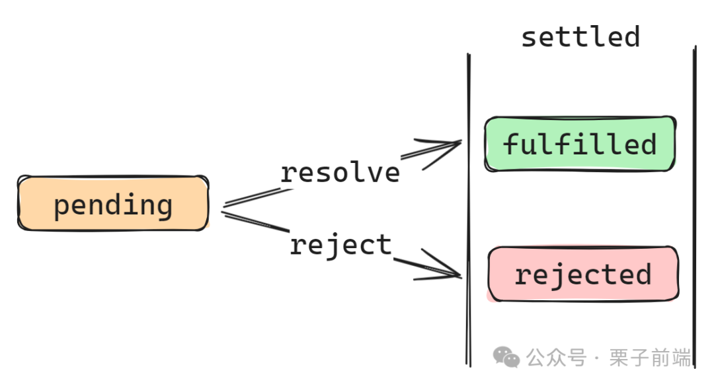
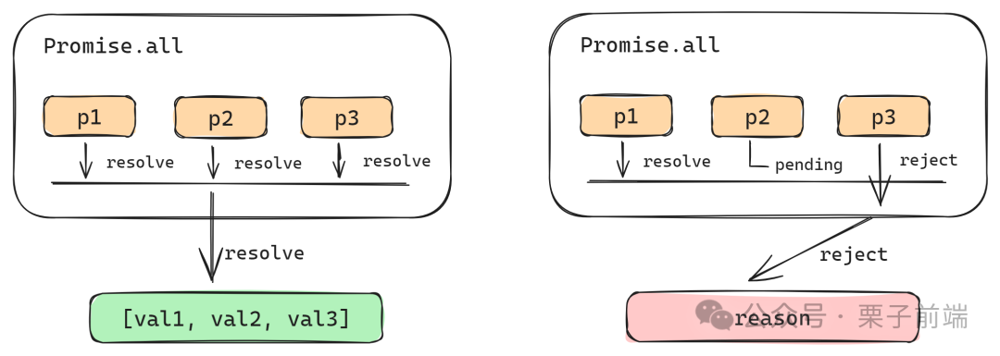
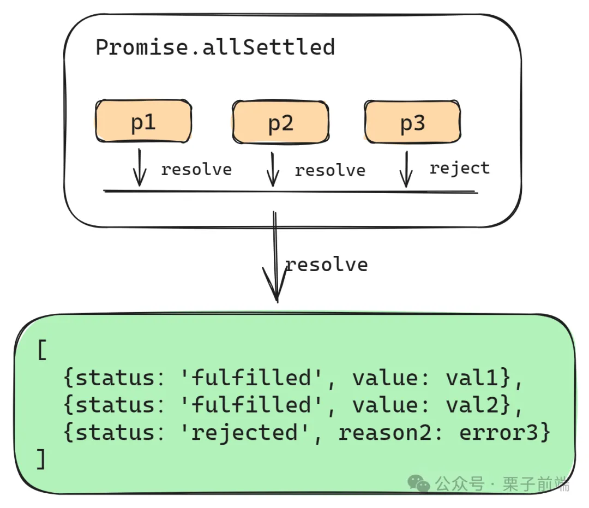
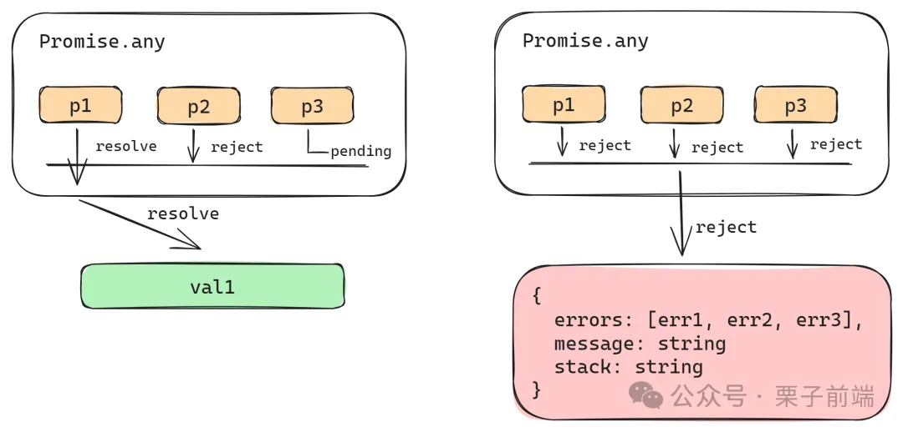
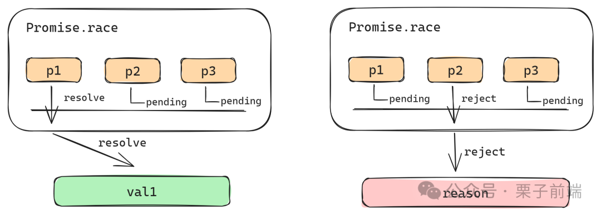

Promise 状态变化如下：

Promise.all 方法相信各位都很熟悉，该方法接受一个数组，返回一个 Promise 实例。
Promise.all 的能力如下：

const promise1 = Promise.resolve(18);
const promise2 = 35;
const promise3 = new Promise((resolve, reject) => {
setTimeout(resolve, 1000, "foo");
});
Promise.all([promise1, promise2, promise3]).then((values) => {
console.log(values);
});
// 1 秒后输出: Array [18, 25, "foo"]
const promise1 = new Promise((resolve, reject) => {
setTimeout(reject, 500, "bar");
});
const promise2 = 35;
const promise3 = new Promise((resolve, reject) => {
setTimeout(resolve, 1000, "foo");
});
Promise.all([promise1, promise2, promise3]).catch((values) => {
console.log(values);
});
// 0.5s 后输出: bar
Promise.allSettled 该方法接受一个数组，返回一个 Promise 实例。
Promise.allSettled 的能力如下：

当所有传入的 promise 都变为已完成状态（settled ），无论它们成功还是失败，Promise.allSettled 会返回一个 promise 实例，状态为已成功，参数是个数组，数组的对象都有三个属性：
const promise1 = Promise.resolve(3);
const promise2 = new Promise((resolve, reject) =>
setTimeout(reject, 1000, "foo")
);
const promises = [promise1, promise2];
Promise.allSettled(promises).then((results) =>
results.forEach((result) =>
console.log(result.status === "fulfilled" ? result.value : result.reason)
)
);
// 1s 后依次输出：3、foo
Promise.allSettled vs Promise.all
Promise.any 该方法同样接受一个数组，返回一个 Promise 实例。
Promise.any 的能力如下：

const promise1 = Promise.reject(0);
const promise2 = new Promise((resolve) => setTimeout(resolve, 100, "quick"));
const promise3 = new Promise((resolve) => setTimeout(resolve, 500, "slow"));
const promises = [promise1, promise2, promise3];
Promise.any(promises).then((value) => console.log(value));
// 0.1s 后输出：quick
const promise1 = Promise.reject(0);
const promise2 = new Promise((resolve, reject) =>
setTimeout(reject, 100, "quick")
);
const promise3 = new Promise((resolve, reject) =>
setTimeout(reject, 500, "slow")
);
const promises = [promise1, promise2, promise3];
Promise.any(promises).catch((value) => {
console.dir(value.errors);
});
// 0.5s 后输出：[0, 'quick', 'slow']
Promise.any vs Promise.all
Promise.any 和 Promise.all 可以与 Array.prototype.some() 和 Array.prototype.every() 进行类比。
Promise.any 更关注某个最先成功的任务，比如你向多个服务器节点请求同个资源，哪个最先返回就使用哪个。
Promise.race 该方法同样接受一个数组，返回一个 Promise 实例。
Promise.race 的能力如下：

当传入的 promise 数组中有一个状态为已完成（settled）, Promise.race 返回的 promise 就会根据最先完成的 promise 改变状态（fulfilled 或 rejected），并返回内容。
const promise1 = new Promise((resolve, reject) => {
setTimeout(resolve, 500, "one");
});
const promise2 = new Promise((resolve, reject) => {
setTimeout(resolve, 100, "two");
});
Promise.race([promise1, promise2]).then((value) => {
console.log(value);
});
// 0.1s 后输出: "two"
const promise1 = new Promise((resolve, reject) => {
setTimeout(resolve, 500, "one");
});
const promise2 = new Promise((resolve, reject) => {
setTimeout(reject, 100, "two");
});
Promise.race([promise1, promise2]).catch((value) => {
console.log(value);
});
// 0.1s 后输出: "two"
Promise.race vs Promise.any
Promise.race 可以用来控制请求并发，代码如下：
/**
* poolLimit: 并发数
* iterable: 并发迭代数组
* iteratorFn: 并发执行函数
*/
async function asyncPool(poolLimit, iterable, iteratorFn) {
// 用于保存所有异步请求
const ret = [];
// 用户保存正在进行的请求
const executing = new Set();
for (const item of iterable) {
// 构造出请求 Promise
const p = Promise.resolve().then(() => iteratorFn(item, iterable));
ret.push(p);
executing.add(p);
// 请求执行结束后从正在进行的数组中移除
const clean = () => executing.delete(p);
p.then(clean).catch(clean);
// 如果正在执行的请求数大于并发数，就使用 Promise.race 等待一个最快执行完的请求
if (executing.size >= poolLimit) {
await Promise.race(executing);
}
}
// 返回所有结果
return Promise.all(ret);
}
// 使用方法
const timeout = (i) =>
new Promise((resolve) => setTimeout(() => resolve(i), i));
asyncPool(2, [1000, 5000, 3000, 2000], timeout).then((results) => {
console.log(results);
});
// 6s 后输出：[1000, 5000, 3000, 2000]
核心实现就是使用 Promise.race 和 Promise.all。如果发出的请求大等于并发数了，这时就不会发起下一个请求，而是使用 Promise.race 等待一个最快执行结束的请求，然后在继续发请求。最后通过 Promise.all 返回所有结束。
Promise.resolve 这个相信大家都有在平时开发中使用，用于快速创建一个状态为 fulfilled 的 promise 实例。
const promise1 = Promise.resolve(123);
promise1.then((value) => {
console.log(value);
});
// 输出: 123
Promise.reject 类似 Promise.resolve，用于快速创建一个状态为 rejected 的 promise 实例。
function resolved(result) {
console.log("Resolved");
}
function rejected(result) {
console.log(result);
}
Promise.reject(new Error("fail")).then(resolved, rejected);
// 输出: fail
当我们需要把回调函数式的异步编程兼容成 Promise 时，我们通常会用 new Promise((resolve, rejcet) => {}) 来处理，有了 Promise.withResolvers 后，代码会变得更简单。
const { promise, resolve, reject } = Promise.withResolvers();
// 等同于
let resolve, reject;
const promise = new Promise((res, rej) => {
resolve = res;
reject = rej;
});
异步编程可以根据自己喜欢选择编写方式：
const { promise, resolve, reject } = Promise.withResolvers();
setTimeout(resolve, 1000, "done");
promise.then(console.log);
// 1s 后输出: done
// 等同于
const promise = new Promise((resolve, reject) => {
setTimeout(resolve, 1000, "done");
});
promise.then(console.log);